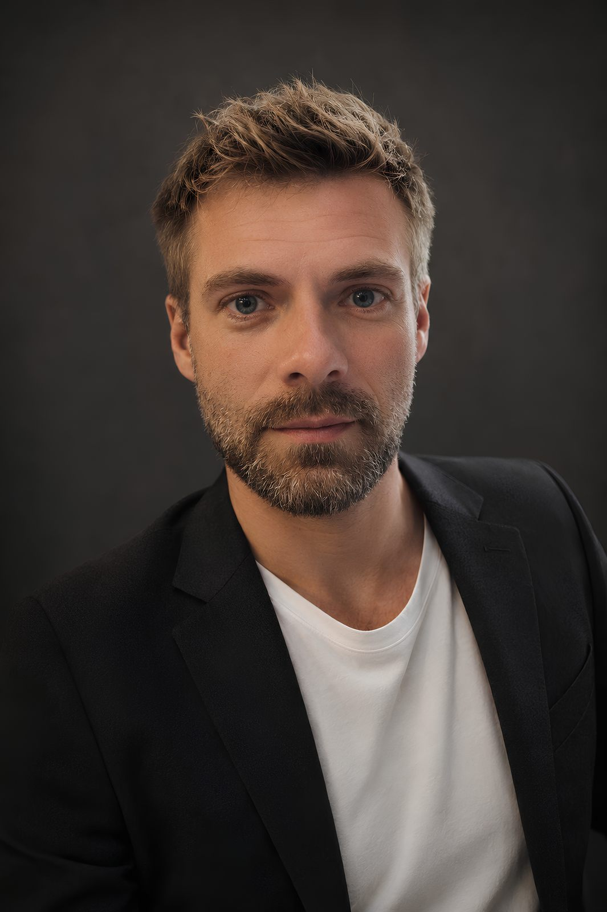
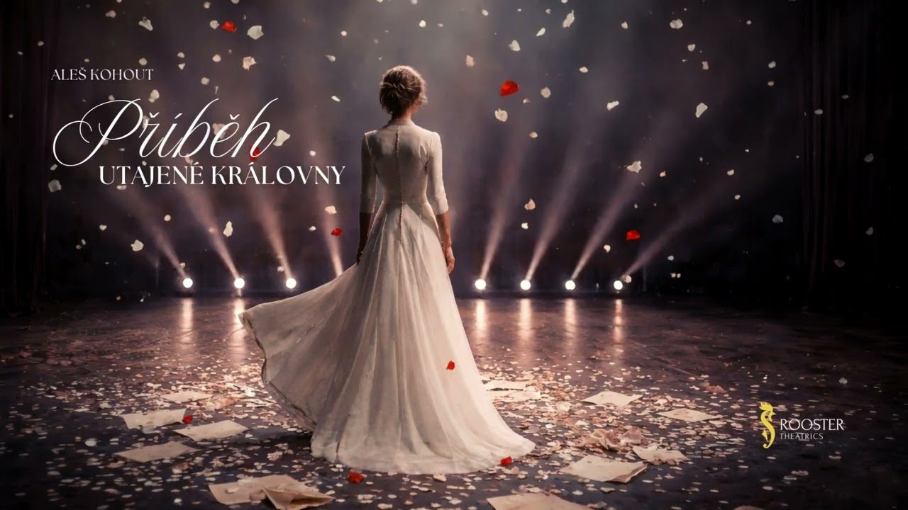
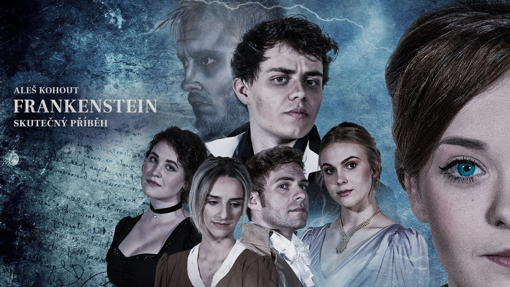
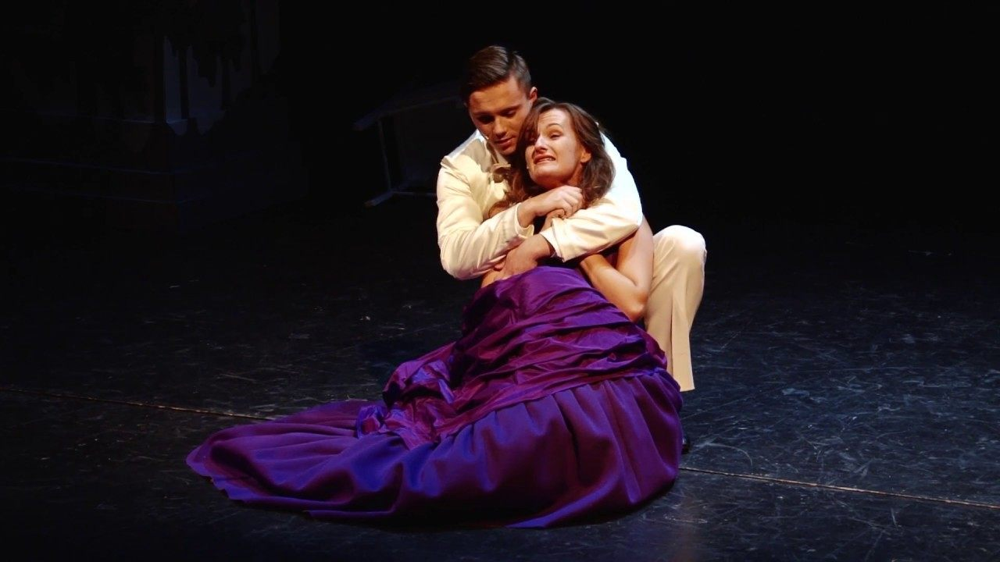
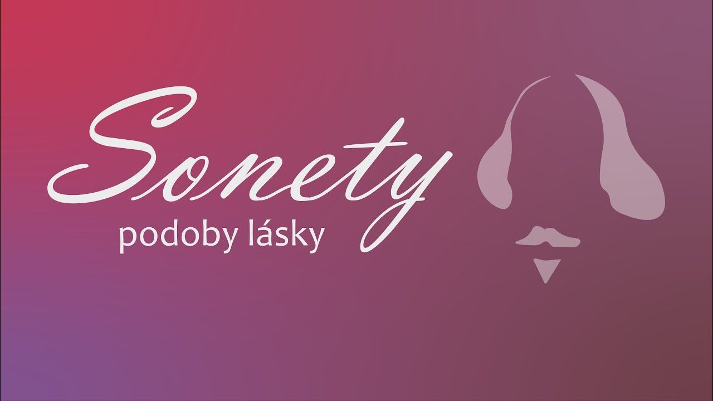
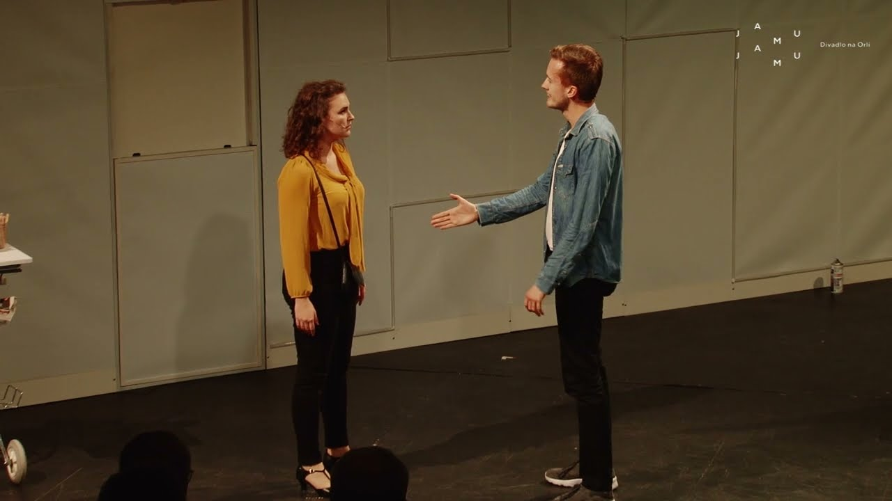
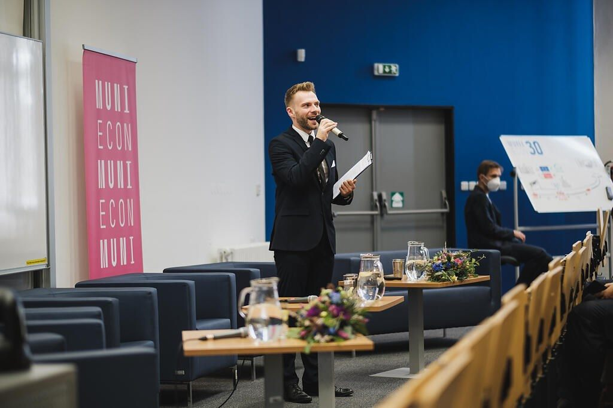

Muzikálový herec a tvůrce. Autor muzikálových oper Anna Kareninová, Frankenstein-skutečný příběh a Příběh utajené královny. Vedoucí ateliéru muzikálového herectví na JAMU v Brně.

Propojuji hudbu a slova do muzikálových oper.
Jsem skladatel, režisér, herec a pedagog. Po absolvování muzikálového herectví na JAMU jsem osm sezón působil v Divadle Josefa Kajetána Tyla v Plzni. Vystupoval jsem v muzikálech Noc na Karlštejně, Adéla ještě nevečeřela, Footloose, Polibek pavoučí ženy, Producenti, Probuzení jara, Někdo to rád horké, Kdyby tisíc klarinetů, Kočky a dalších.
Dnes vedu ateliér muzikálového herectví na Janáčkově akademii múzických umění v Brně. Vedle pedagogické práce se věnuji vlastní autorské tvorbě a moderování – od společenských a kulturních akcí přes podcasty až po rozhlasové vysílání.

Muzikál inspirovaný skutečnými událostmi vzdává hold ženě, jejíž život byl protkán vášní, láskou, zradou i zázraky. Svůj klid nakonec nalezla daleko od královských sídel Velké Británie — v jihomoravském Blansku.

Píše se rok 1816 a Mary Wollstonecraft-Godwinová je svědkem dramatických událostí, které ji inspirují k napsání jejího nejslavnějšího románu. Setkává se s vědcem, který si hrál na Boha a byl odsouzen k věčnému utrpení.

„Měl by člověk litovat toho, co udělal z lásky? Ne. Litovat by měl jen toho, co neudělal." Muzikálová opera, která se ihned po premiéře stala jednou z nejúspěšnějších inscenací Divadla na Orlí.

Kolik podob lásky lze najít v poezii Williama Shakespearea? Netradiční projekt propojující herectví, zpěv, tanec a přednes s výraznými pohybovými a vokálními prvky.

Komorní muzikál sledující příběh dvou lidí, které svedla dohromady stanice metra. Zůstat v zajetých kolejích v rytmu neúprosného metronomu nebo se vydat do neznáma? Vsadit na náhodu nebo na osud?
Naprosto bezvýhradných 100 % a must see. Brilantní herecké výkony, nádherná hudba, nápaditá práce s kostýmy. Jedním slovem nádhera.
Nejlepší muzikál, který jsem kdy viděl. Stvořili něco, co tu nemá obdoby. Smekám kloubouk před celým inscenačním týmem.
Na tohle představení nikdy nezapomenu. Zasáhlo mě neskutečně. Nádherná hudba a texty. Aleš Kohout má obrovský talent.
Příslib úspěšné sezóny. Dechberoucí představení talentovaných studentů JAMU. Muzikál superlativů. Návrat Aleše Kohouta je opět bomba.
Drásavá hudba burácí od začátku do konce, je to hodně zahuštěná kompozice se zajímavými vícehlasy i exponovanými áriemi, která klade na mladé interprety opravdu velké nároky.
Příjemný, oddychový komorní muzikál v podání studentů JAMU. Studenti překvapili skvělým výkonem a vysokým nasazením. Výborný byl i hudební doprovod.
Muzikál, který jsem složil, se vrací na jeviště. Co se s ním za tu dobu stalo a proč přichází zrovna teď?
PoslechnoutNejotevřenější povídání, jaké jsem kdy dal. O práci, o soukromí i o tom, kde beru chuť tvořit dál.
PoslechnoutJak vzniká muzikálová opera podle slavného románu a jaké to je učit muzikál v Brně.
PřehrátJak se píše hudba pro divadlo a jaké je vracet se na scénu, kterou mám pod kůží.
PoslechnoutO loučení s jistotou angažmá, o rolích, které se mnou zůstaly, a o tom, kam mě to táhlo dál.
PoslechnoutJak se to všechno dá zvládat najednou, kde to celé začalo a co mají ty profese společného.
Poslechnout
Moderování pro mě znamená především naslouchat, pohotově reagovat, udržet pozornost a navázat s publikem skutečný kontakt. Vycházím přitom ze zkušeností z divadla, rádia a moderování kulturních a společenských akcí.
Moderátor zpravodajství
Moderátor a redaktor
Moderování konferencí Lékařské a Ekonomicko-správní fakulty
Moderátor podcastu Život plus
Podcast Život plus rozebírá témata, která přináší sám život: psychické zdraví, vztahy, identita, odvaha být sám sebou. Otevřené rozhovory se zajímavými osobnostmi pro všechny, kteří se nebojí mluvit o tom, na čem záleží.
Přehrávač Spotify se načte až po kliknutí.
Pro spolupráci, moderování i další umělecké projekty jsem k dispozici.
kohout.ales@gmail.com{kind=link}
{kind=link}
{kind=link}
{kind=link}
{kind=link}
{kind=link}
{kind=link}
{kind=link}
{kind=link}
{kind=link}
{kind=link}
{kind=link}
{kind=link}
{kind=link}
{kind=link}